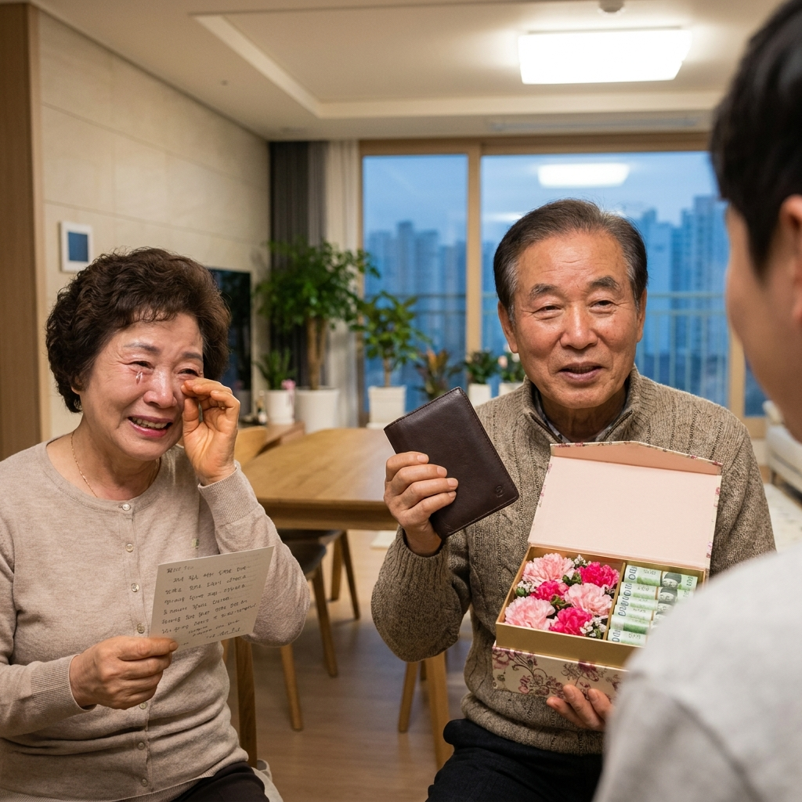

첫 월급 부모님 선물과 용돈 얼마가 적당한가 — 내복 대신 요즘 드리는 선물 금액대와 감사 편지 문구 예시
치열한 취업 관문을 뚫고 사회인으로서 첫발을 내디딘 후 받게 되는 '첫 월급'은 인생에서 가장 뜻깊고 벅찬 순간 중 하나입니다. 과거에는 첫 월급을 타면 부모님께 붉은 내복을 사다 드리는 것이 관례였지만, 요즘은 실용성과 감동을 동시에 전할 수 있는 현금 용돈이나 맞춤형 선물이 대세로 자리 잡았습니다.
하지만 사회초년생의 입장에서 첫 달 월급의 얼마를 부모님 용돈으로 떼어 드려야 부담스럽지 않으면서도 성의를 다할 수 있는지 고민이 깊어지기 마련입니다. 오늘 포스팅에서는 2030 사회초년생들의 통상적인 첫 월급 용돈 금액대, 금액대별 인기 효도 선물 비교표, 감동을 두 배로 만드는 감사 손편지 문구 예시까지 실속 있게 정리해 드립니다.
첫 월급으로 부모님께 감사한 마음을 전하는 정성스러운 용돈 봉투와 감사 편지 / AI 제작 이미지
01 | 첫 월급의 상징적 의미와 '빨간 내복'에서 바뀐 최신 트렌드
첫 월급으로 부모님께 내복을 사다 드리던 풍습은 1960~70년대에 시작되었습니다. 당시 귀하고 따뜻했던 빨간 내복은 '부모님의 은혜에 보답하고 건강을 기원한다'는 깊은 상징성을 담고 있었습니다.
그러나 난방 시설이 완비되고 생활수준이 향상된 오늘날에는 내복의 실용성이 떨어지면서, 부모님이 직접 필요에 따라 사용하실 수 있는 **현금 용돈(현금 봉투)**이 선호도 1위를 차지하고 있습니다.
여기에 건강식품, 스마트 전자기기, 고급 레스토랑 식사 등 부모님의 취향과 라이프스타일을 세심하게 배려한 선물을 현금과 곁들이는 복합형 선물 문화가 최근 2030 직장인들 사이에서 가장 보편적인 형태로 자리 잡았습니다.
02 | 첫 월급 부모님 용돈 통상 금액대와 월급 비율 기준표
부모님께 드리는 첫 월급 용돈 액수에는 정해진 법이나 정답이 없습니다. 본인의 실수령액, 독립 여부(자취 여부), 학자금 대출 상환 계획 등을 고려해 무리하지 않는 선에서 책정하는 것이 가장 현명합니다.
취업 포털과 직장인 커뮤니티 설문조사에 따르면, 사회초년생들은 첫 달 실수령액의 약 **15% ~ 30%** 선을 부모님 용돈으로 지출하는 것으로 나타났습니다.
| 첫 월급 실수령액 구간 |
통상적인 부모님 용돈 총액 |
부모님 1인당 배분 기준 |
권장 지출 비율 |
| 200만 원 ~ 250만 원 미만 |
30만 원 ~ 50만 원 |
각 15만 원 ~ 25만 원씩 |
실수령액의 약 15% ~ 20% |
| 250만 원 ~ 300만 원 미만 |
50만 원 ~ 60만 원 |
각 25만 원 ~ 30만 원씩 |
실수령액의 약 20% |
| 300만 원 이상 |
60만 원 ~ 100만 원 |
각 30만 원 ~ 50만 원씩 |
실수령액의 약 20% ~ 30% |
만약 자취를 하고 있어 월세와 보증금 대출 이자 부담이 크다면 30만 원(부모님 각 15만 원) 선으로 정성을 표현하고, 부모님과 함께 거주하고 있다면 50만 원 이상을 드리는 경우가 일반적입니다.
03 | 현금만 드릴 때 vs 실물 선물과 병행할 때의 예산 배분 요령
부모님께 첫 월급을 전달하는 방식은 크게 '현금 몰아주기형'과 '현금 + 실물 선물 병행형'으로 나뉩니다.
현금만 드릴 경우 부모님이 필요하신 곳에 자유롭게 쓰실 수 있다는 장점이 있지만, 자칫 형식적으로 느껴질 수 있습니다. 따라서 현금만 드릴 때는 반드시 **마음을 담은 정성스러운 손편지**를 동봉해야 감동이 배가됩니다.
실물 선물과 병행할 때는 총예산(예: 50만 원)을 현금 30만 원(각 15만 원) + 실물 선물 20만 원(커플 아이템이나 건강식품)으로 나누어 구성하면, 손에 쥐는 실물 선물의 설렘과 현금의 실속을 모두 만족시킬 수 있습니다.
04 | 금액대별 부모님 감동 실속 선물 추천 비교표 (10만~50만 원)
선물을 준비할 때 부모님이 평소에 필요로 하셨거나 스스로 돈 주고 사기는 아까워하셨던 아이템을 선택하면 만족도가 극대화됩니다.
| 예산 금액대 |
추천 선물 품목 |
부모님 반응 및 만족 포인트 |
선택 시 주의사항 |
| 10만 원 ~ 20만 원 |
정관장 홍삼액, 커플 운동화, 고급 영양제 세트 |
부담 없이 매일 섭취하거나 착용 가능 |
지병(고혈압·당뇨) 여부 확인 후 영양제 선택 |
| 20만 원 ~ 30만 원 |
호텔 뷔페 디너(2인), 무선 목·어깨 마사지기 |
특별한 날의 추억과 실질적인 근육 피로 완화 |
식사권은 주말 예약 가능 여부 사전 확인 |
| 30만 원 ~ 50만 원 |
스마트워치(애플워치/갤럭시워치), 명품 지갑/스카프 |
친구분들께 자랑하기 가장 좋은 상징적 아이템 |
디자인과 색상은 부모님 평소 착장 고려 |

첫 월급 선물과 편지를 받아들고 환한 미소를 지으시는 부모님의 감동적인 순간 / AI 제작 이미지
05 | 아버지·어머니 취향 저격 맞춤형 인기 선물 리스트
아버지와 어머니는 선호하는 선물의 방향이 다를 수 있으므로 각각의 니즈를 파악해 개별 선물을 준비하는 것도 훌륭한 방법입니다.
부모님 맞춤형 실전 인기 아이템
- 어머니 맞춤 추천: 백화점 명품 브랜드 스카프(버버리, 에르메스 입문 라인), 갈색병 안티에이징 에센스 세트, 가볍고 수납이 좋은 캐주얼 가죽 핸드백, 편안한 쿠션 컴포트화.
- 아버지 맞춤 추천: 세련된 슬림 가죽 반지갑, 고급 전기면도기(브라운/필립스 프리미엄 라인), 기능성 골프웨어/아웃도어 방풍 재킷, 건강 측정용 스마트워치.
부모님이 평소 쓰시던 낡은 지갑이나 다 닳은 신발을 눈여겨보았다가 첫 월급으로 새것으로 교체해 드리면 자녀의 세심한 눈썰미에 깊은 감동을 받으십니다.
06 | 평범한 봉투는 NO — 돈꽃다발·용돈박스·반전케이크 전달 아이디어
현금을 드릴 때 일반 흰 편지봉투에 담아 쓱 건네기보다는, 약간의 재미와 이벤트를 가미하면 평생 잊지 못할 추억을 선물할 수 있습니다.
가장 인기 있는 연출은 '용돈 반전 케이크'입니다. 케이크 위의 토퍼를 위로 잡아당기면 투명 비닐에 포장된 5만 원권 지폐가 줄줄이 딸려 나오는 구조로, 가족 모임에서 최고의 웃음과 환호를 이끌어냅니다.
또한 고급 원목 플라워 박스 속에 비누꽃과 함께 지폐를 롤 형태로 정갈하게 말아 넣은 **'플라워 용돈박스'**나, 전통 보자기 매듭과 노리개로 장식한 예단 스타일의 **'비단 용돈 봉투'**는 정중하면서도 품격 있는 인상을 남깁니다.
07 | 눈물샘 자극하는 첫 월급 감사 손편지 & 카톡 문구 예시 4선
선물의 완성은 글입니다. 부모님들이 첫 월급에서 가장 오래 간직하시는 것은 돈이 아니라 자녀가 삐뚤빼뚤 정성껏 쓴 편지 한 장입니다. 상황에 맞게 골라 쓸 수 있는 문구 4가지를 소개해 드립니다.
부모님께 드리는 첫 월급 감사 편지 실전 문구 모음
[문구 1: 감동·진솔형]
"엄마, 아빠. 늘 뒤에서 묵묵히 저를 믿고 든든한 버팀목이 되어주신 덕분에 이렇게 무사히 사회의 일원으로 첫걸음을 내딛게 되었습니다. 오늘 받은 제 인생의 첫 월급은 온전히 부모님의 피땀과 헌신으로 만들어진 것입니다. 키워주신 은혜에 비하면 작지만, 감사의 마음을 담아 첫 월급을 드립니다. 앞으로 더 자랑스러운 자식이 되겠습니다. 건강하게 오래오래 곁에 있어 주세요. 사랑합니다."
[문구 2: 유쾌·효도형]
"사랑하는 부모님! 드디어 제가 취업해서 제 힘으로 번 첫 월급을 탔습니다! 그동안 저 공부시키느라 고생 많으셨죠? 이제는 제가 부모님의 든든한 연금이 되어드릴 차례입니다. 오늘은 돈 걱정 마시고 두 분이서 맛있는 것도 드시고 사고 싶으셨던 것도 마음껏 사세요. 앞으로 효도할 날이 무궁무진하니 기대하셔도 좋습니다!"
[문구 3: 자취·독립형]
"혼자 나와 살아보니 매달 나가는 생활비며 집안일까지, 그동안 부모님께서 저를 키우기 위해 얼마나 많은 희생을 하셨는지 비로소 뼈저리게 깨닫고 있습니다. 늘 받기만 했던 제가 부모님께 무언가를 드릴 수 있는 어른이 되었다는 게 벅차고 감사합니다. 첫 월급의 기쁨을 가장 먼저 부모님과 나누고 싶어요. 언제나 사랑하고 존경합니다."
[문구 4: 정중·단문 카톡형]
"아버지, 어머니. 부족한 저를 바르게 키워주셔서 감사합니다. 취업 후 첫 월급을 받아 감사의 뜻으로 작은 정성을 보냅니다. 액수보다 제 진심 어린 감사의 마음으로 받아주셨으면 좋겠습니다. 항상 건강하시고 행복하세요!"
08 | 형제자매나 조부모님께는 얼마를 드려야 하나 — 친척 선물 가이드
취업 준비 기간 동안 묵묵히 응원해 준 형제자매나 손주를 각별히 아껴주신 할머니, 할아버지에 대한 예의도 챙기면 더욱 훈훈한 가정이 됩니다.
조부모님이 살아 계신다면 10만 원 안팎의 용돈 봉투나 부드러운 양갱·과일 바구니를 전해드리면 큰 기쁨을 드릴 수 있습니다.
형제나 자매에게는 현금보다는 평소 갖고 싶어 했던 옷, 운동화, 전자기기(약 5만~10만 원 선)를 사주거나 맛있는 저녁 식사를 대접하는 것으로 감사의 뜻을 전하는 것이 자연스럽습니다.
09 | 첫 월급으로 부모님과 함께하는 특별한 저녁 외식 메뉴 추천
첫 월급을 탄 주말에는 온 가족이 둘러앉아 오붓한 저녁 식사를 함께하는 자리를 마련해 보세요.
외식 메뉴로는 부모님 세대가 가장 선호하시는 한우 숯불구이나 분위기 좋은 일식 코스 요리, 정갈한 한정식 전문점이 무난합니다.
식사 도중에 부모님 몰래 카운터에서 식사 비용을 먼저 결제한 뒤, 후식 차가 나올 때 준비해 둔 용돈 봉투와 편지를 건네면 그 어떤 영화보다 감동적인 가족의 밤을 연출할 수 있습니다.
10 | 효도 선물과 함께 시작하는 사회초년생의 첫 재테크 통장 분리
부모님께 기쁨을 드리는 것도 중요하지만, 첫 달부터 월급 관리를 소홀히 하면 '밑 빠진 독에 물 붓기'식 소비 습관이 들기 쉽습니다.
첫 월급 축하 지출(부모님 용돈 + 가족 외식)은 첫 달 월급의 **최대 30%를 넘지 않도록 상한선**을 정해두어야 다음 달 카드값 연체나 생활고를 겪지 않습니다.
부모님 용돈을 떼어 드린 직후 남은 월급으로 **청년도약계좌, 주택청약종합저축, 비상금 통장**으로 자동이체를 설정하여 '선저축 후소비'의 건강한 금융 습관을 첫 달부터 구축하시기 바랍니다.
📌 함께 읽으면 좋은 가을 나들이 & 생활 팁
#첫월급부모님선물
#첫월급부모님용돈
#사회초년생첫월급
#첫월급감사편지
#부모님용돈봉투
#용돈반전케이크
#부모님효도선물
#첫월급외식메뉴
#부모님편지문구
#사회초년생재테크